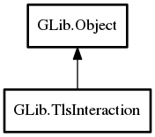

TlsInteraction
Object Hierarchy:
Description:
TlsInteraction provides a mechanism for the TLS connection and database code to interact with the user.
It can be used to ask the user for passwords.
To use a TlsInteraction with a TLS connection use set_interaction.
Callers should instantiate a derived class that implements the various interaction methods to show the required dialogs.
Callers should use the 'invoke' functions like invoke_ask_password to run interaction methods. These functions make sure that the interaction is invoked in the main loop and not in the current thread, if the current thread is not running the main loop.
Derived classes can choose to implement whichever interactions methods they'd like to support by overriding those virtual methods in their class initialization function. Any interactions not implemented will return g_tls_interaction_unhandled. If a derived class implements an async method, it must also implement the corresponding finish method.
Namespace: GLib
Package: gio-2.0
Content:
Creation methods:
Methods:
Inherited Members:
All known members inherited from class GLib.Object